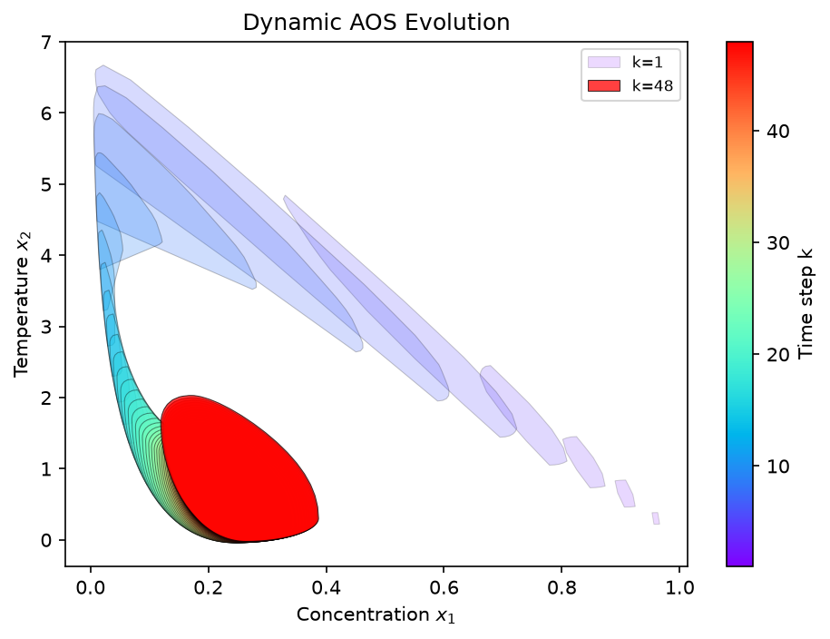
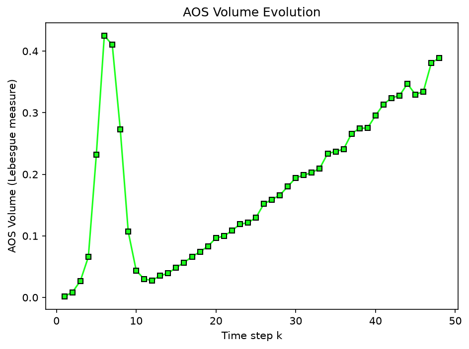
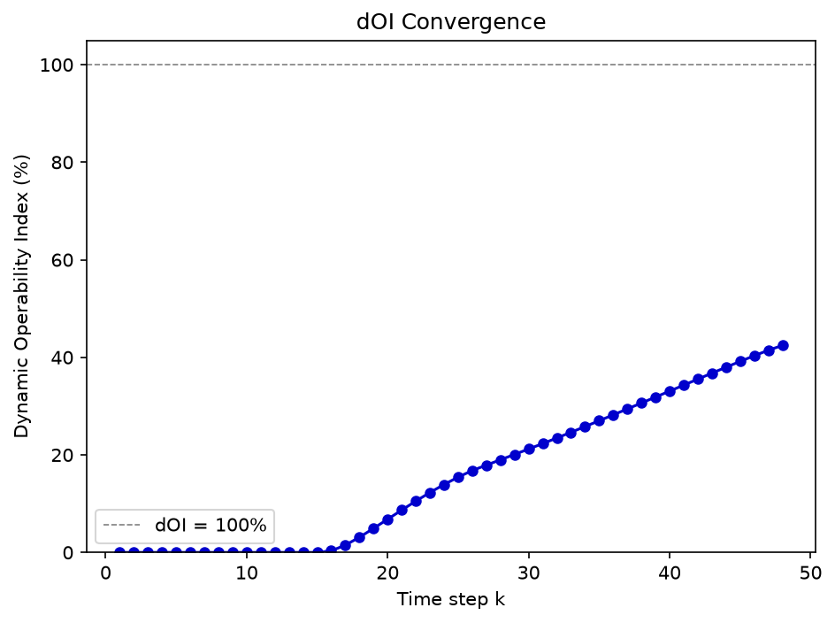

Dynamic Operability Analysis: Pyomo + Orthogonal Collocation#
This example runs a dynamic operability analysis with a Pyomo DAE model discretized by orthogonal collocation on finite elements as the step model. make_pyomo_step_model turns a Pyomo model builder into a step callable for dynamic_operability.
The system is a nonisothermal CSTR with a first-order irreversible reaction \(A \to B\), with states \(x_1\) (dimensionless concentration) and \(x_2\) (dimensionless temperature) and inputs \(u_1\) (feed concentration) and \(u_2\) (coolant temperature):
Parameters: \(Da = 0.072\) (Damkohler number), \(\gamma = 20\) (activation energy), \(B = 8\) (heat of reaction), \(\beta = 0.3\) (heat transfer), \(\theta = 20\) (residence time).
import numpy as np
import matplotlib.pyplot as plt
import pyomo.environ as pyo
import pyomo.dae as dae
from opyrability import (
dynamic_operability_mapping,
dOI_eval,
plot_dynamic_funnel,
simulate_mc_trajectories,
make_pyomo_step_model,
)
Step 1: Pyomo DAE model builder#
A function builds a Pyomo ConcreteModel for one CSTR time step, discretizing the ODEs over \([0, \Delta t]\) by orthogonal collocation. It exposes m.x_current (current state, a Param), m.u (inputs), m.x_next (next state, a Var), and the constraints linking them through the DAE.
# CSTR parameters
Da = 0.072 # Damkohler number
gamma = 20.0 # Activation energy parameter
B_rxn = 8.0 # Dimensionless heat of reaction
beta = 0.3 # Heat transfer coefficient
theta = 20.0 # Residence time
dt = 0.5 # Time step size (small for fine resolution in the early transient)
n_x = 2 # States: concentration, temperature
n_u = 2 # Inputs: feed concentration, coolant temperature
def build_cstr_step():
"""
Build a Pyomo model for one CSTR time step, discretized by collocation.
The two CSTR ODEs are integrated over a single step ``[0, dt]`` using
orthogonal collocation on finite elements (3 elements, 3 Lagrange-Radau
points). The model exposes ``x_current`` (current state, set before each
solve), ``u`` (inputs), and ``x_next`` (state at the end of the step),
linked by the discretized dynamics.
Returns
-------
pyomo.environ.ConcreteModel
The single-step CSTR model, ready to solve once ``x_current`` and
``u`` are fixed.
"""
m = pyo.ConcreteModel()
# Time domain for a single step [0, dt]
m.t = dae.ContinuousSet(bounds=(0, dt))
# Index sets
m.state_idx = pyo.RangeSet(0, n_x - 1)
m.input_idx = pyo.RangeSet(0, n_u - 1)
# Current state (parameters, set before each solve)
m.x_current = pyo.Param(m.state_idx, initialize=0.0, mutable=True)
# Inputs (fixed before each solve)
m.u = pyo.Var(m.input_idx, initialize=0.0)
# State profiles over [0, dt]
m.x1 = pyo.Var(m.t, initialize=1.0) # concentration
m.x2 = pyo.Var(m.t, initialize=0.0) # temperature
# Derivatives
m.dx1dt = dae.DerivativeVar(m.x1, wrt=m.t)
m.dx2dt = dae.DerivativeVar(m.x2, wrt=m.t)
# ODEs
@m.Constraint(m.t)
def ode_x1(m, t):
if t == 0:
return pyo.Constraint.Skip
r = Da * m.x1[t] * pyo.exp(m.x2[t] / (1 + m.x2[t] / gamma))
return m.dx1dt[t] == (1.0 / theta) * (m.u[0] - m.x1[t]) - r
@m.Constraint(m.t)
def ode_x2(m, t):
if t == 0:
return pyo.Constraint.Skip
r = Da * m.x1[t] * pyo.exp(m.x2[t] / (1 + m.x2[t] / gamma))
return m.dx2dt[t] == (1.0 / theta) * (-m.x2[t]) + B_rxn * r - beta * (m.x2[t] - m.u[1])
# Initial conditions (linked to x_current parameters)
@m.Constraint()
def ic_x1(m):
return m.x1[0] == m.x_current[0]
@m.Constraint()
def ic_x2(m):
return m.x2[0] == m.x_current[1]
# Apply collocation discretization: 3 finite elements, 3 collocation points
discretizer = pyo.TransformationFactory('dae.collocation')
discretizer.apply_to(m, nfe=3, ncp=3, scheme='LAGRANGE-RADAU')
# Next state = final value of state profiles
m.x_next = pyo.Var(m.state_idx, initialize=0.0)
@m.Constraint()
def link_x_next_0(m):
return m.x_next[0] == m.x1[dt]
@m.Constraint()
def link_x_next_1(m):
return m.x_next[1] == m.x2[dt]
# Dummy objective (feasibility problem)
m.obj = pyo.Objective(expr=0)
return m
print("CSTR Pyomo model builder defined.")
print(f"States: x1 (concentration), x2 (temperature)")
print(f"Inputs: u1 (feed conc.), u2 (coolant temp.)")
print(f"Time step dt = {dt}")
CSTR Pyomo model builder defined.
States: x1 (concentration), x2 (temperature)
Inputs: u1 (feed conc.), u2 (coolant temp.)
Time step dt = 0.5
Step 2: Wrap the builder with make_pyomo_step_model#
The wrapper builds the model, sets x_current and u, solves with IPOPT, and returns x_next.
step_model = make_pyomo_step_model(build_cstr_step,
n_x=n_x,
n_u=n_u)
# Test the step model with a single step. make_pyomo_step_model returns
# a (x_next, y) tuple; the output y defaults to the identity (y = x_next).
x_test = np.array([1.0, 0.0]) # initial: feed conc=1, temp=0
u_test = np.array([1.0, 0.0]) # nominal inputs
x_next_test, y_test = step_model(x_test, u_test)
print(f"Test step: x0 = {x_test} -> x1 = {x_next_test}")
Test step: x0 = [1. 0.] -> x1 = [0.95949 0.30199]
Step 3: Outputs and operability sets#
The outputs are the states themselves (\(y = x\)). We set the AIS (feed concentration \(u_1 \in [0.8, 1.2]\), coolant temperature \(u_2 \in [-0.5, 0.5]\)), the DOS (concentration \(y_1 \in [0.1, 0.5]\), temperature \(y_2 \in [-0.2, 2.0]\)), and the initial state \(x_0 = (1.0, 0.0)\).
# Initial state (fresh feed, ambient temperature)
x0 = np.array([1.0, 0.0])
# Available Input Set bounds
AIS_bounds = np.array([
[0.8, 1.2], # u1: feed concentration
[-0.5, 0.5], # u2: coolant temperature
])
# Desired Output Set bounds (covers the steady-state AOS range)
DOS_bounds = np.array([
[0.1, 0.5], # y1: concentration
[-0.2, 2.0], # y2: temperature
])
# With dt=0.5, k_max=48 covers 24 time units total.
# This gives fine resolution in the early transient (many polytopes
# between k=0 and k=10, i.e. t=0 to t=5).
k_max = 48
print(f"Initial state: x0 = {x0}")
print(f"AIS bounds: {AIS_bounds.tolist()}")
print(f"DOS bounds: {DOS_bounds.tolist()}")
print(f"Max time steps: {k_max} (total time = {k_max * dt})")
Initial state: x0 = [1. 0.]
AIS bounds: [[0.8, 1.2], [-0.5, 0.5]]
DOS bounds: [[0.1, 0.5], [-0.2, 2.0]]
Max time steps: 48 (total time = 24.0)
Step 4: Run the dynamic operability analysis#
dynamic_operability_mapping propagates the achievable output set forward by nonlinear state-space projection (vertex enumeration plus convex hull), and dOI_eval scores it against the DOS at each step. We use a scipy step model equivalent to the Pyomo collocation model (validated in Step 6), because running many time steps with Pyomo/IPOPT would be slow, as each vertex needs an NLP solve.
from scipy.integrate import solve_ivp
def cstr_rhs(t, x, u):
"""
Right-hand side of the CSTR ODEs, dx/dt = f(x, u).
Parameters
----------
t : float
Time (unused; the dynamics are autonomous).
x : array-like, shape (2,)
State ``[concentration, temperature]``.
u : array-like, shape (2,)
Inputs ``[feed concentration, coolant temperature]``.
Returns
-------
list of float
The derivative ``[dx1/dt, dx2/dt]``.
"""
x1, x2 = x
r = Da * x1 * np.exp(x2 / (1 + x2 / gamma))
dx1 = (1.0 / theta) * (u[0] - x1) - r
dx2 = (1.0 / theta) * (-x2) + B_rxn * r - beta * (x2 - u[1])
return [dx1, dx2]
def step_model_scipy(x, u):
"""
Advance the CSTR by one step ``dt`` with a direct scipy integration.
This is the scipy equivalent of the Pyomo collocation step model, used for
speed in the mapping; Step 6 checks that the two agree.
Parameters
----------
x : array-like, shape (2,)
Current state.
u : array-like, shape (2,)
Inputs held constant over the step.
Returns
-------
x_next : numpy.ndarray, shape (2,)
State at the end of the step.
y : numpy.ndarray, shape (2,)
Output, here the identity ``y = x_next``.
"""
sol = solve_ivp(cstr_rhs, [0, dt], x, args=(u,),
method='RK45', rtol=1e-8)
x_next = sol.y[:, -1]
return x_next, x_next
# Mapping stage: propagate the AOS forward through the CSTR dynamics.
results = dynamic_operability_mapping(step_model_scipy,
x0,
AIS_bounds,
3,
k_max,
convergence_tol=1e-3,
plot=True,
labels=['Concentration $x_1$', 'Temperature $x_2$'])
# Evaluation stage: dOI at each k.
dOI = dOI_eval(results,
DOS_bounds,
plot=True)
No intersection found between AS and DS. OI = 0.
No intersection found between AS and DS. OI = 0.
No intersection found between AS and DS. OI = 0.
No intersection found between AS and DS. OI = 0.
No intersection found between AS and DS. OI = 0.
No intersection found between AS and DS. OI = 0.
No intersection found between AS and DS. OI = 0.
No intersection found between AS and DS. OI = 0.
No intersection found between AS and DS. OI = 0.
No intersection found between AS and DS. OI = 0.
No intersection found between AS and DS. OI = 0.
No intersection found between AS and DS. OI = 0.
No intersection found between AS and DS. OI = 0.
No intersection found between AS and DS. OI = 0.
No intersection found between AS and DS. OI = 0.



print(f"Converged at step k = {results['k_converged']}")
print(f"Final AOS volume = {results['volumes'][-1]:.4f}")
print(f"Final dOI = {dOI[-1]:.2f}%")
print(f"\ndOI trajectory:")
for k, d in enumerate(dOI):
print(f" k={k+1}: dOI = {d:.2f}%")
Converged at step k = None
Final AOS volume = 0.3888
Final dOI = 42.44%
dOI trajectory:
k=1: dOI = 0.00%
k=2: dOI = 0.00%
k=3: dOI = 0.00%
k=4: dOI = 0.00%
k=5: dOI = 0.00%
k=6: dOI = 0.00%
k=7: dOI = 0.00%
k=8: dOI = 0.00%
k=9: dOI = 0.00%
k=10: dOI = 0.00%
k=11: dOI = 0.00%
k=12: dOI = 0.00%
k=13: dOI = 0.00%
k=14: dOI = 0.00%
k=15: dOI = 0.00%
k=16: dOI = 0.32%
k=17: dOI = 1.51%
k=18: dOI = 3.10%
k=19: dOI = 4.93%
k=20: dOI = 6.81%
k=21: dOI = 8.68%
k=22: dOI = 10.53%
k=23: dOI = 12.28%
k=24: dOI = 13.92%
k=25: dOI = 15.44%
k=26: dOI = 16.78%
k=27: dOI = 17.90%
k=28: dOI = 18.99%
k=29: dOI = 20.09%
k=30: dOI = 21.20%
k=31: dOI = 22.32%
k=32: dOI = 23.46%
k=33: dOI = 24.62%
k=34: dOI = 25.80%
k=35: dOI = 27.00%
k=36: dOI = 28.20%
k=37: dOI = 29.42%
k=38: dOI = 30.63%
k=39: dOI = 31.85%
k=40: dOI = 33.07%
k=41: dOI = 34.30%
k=42: dOI = 35.53%
k=43: dOI = 36.76%
k=44: dOI = 37.97%
k=45: dOI = 39.16%
k=46: dOI = 40.32%
k=47: dOI = 41.45%
k=48: dOI = 42.44%
Step 5: Dynamic operability funnel#
Stacking the achievable output sets along the time axis gives the funnel, overlaid here with Monte Carlo trajectories from random input sequences.
# Monte Carlo trajectories (step model is read from the results dict).
mc_trajs = simulate_mc_trajectories(results,
n_trajectories=100,
seed=42)
fig, _ = plot_dynamic_funnel(results,
DOS=DOS_bounds,
labels=['Concentration x<sub>1</sub>', 'Temperature x<sub>2</sub>'],
alpha=0.3,
view_elev=25,
view_azim=-55,
mc_trajectories=mc_trajs,
mc_color='green',
mc_alpha=0.3,
mc_linewidth=0.5,
engine='plotly')
Step 6: Validate collocation against scipy integration#
Comparing the Pyomo collocation step against a direct scipy ODE integration checks that the collocation discretization is accurate.
# Compare Pyomo collocation step vs scipy RK45 step for several input combinations.
# Both step callables return (x_next, y) tuples; we unpack the state component here.
test_inputs = [
([1.0, 0.0], [1.0, 0.0]),
([1.0, 0.0], [0.8, -0.5]),
([1.0, 0.0], [1.2, 0.5]),
([0.9, 1.0], [1.0, 0.0]),
]
print(f"{'x0':>20s} {'u':>20s} {'Pyomo x_next':>25s} {'Scipy x_next':>25s} {'Max error':>10s}")
print("-" * 110)
for x_t, u_t in test_inputs:
x_pyomo, _ = step_model(np.array(x_t), np.array(u_t))
x_scipy, _ = step_model_scipy(np.array(x_t), np.array(u_t))
err = np.max(np.abs(x_pyomo - x_scipy))
print(f"{str(x_t):>20s} {str(u_t):>20s} {np.array2string(x_pyomo, precision=6):>25s} "
f"{np.array2string(x_scipy, precision=6):>25s} {err:>10.2e}")
x0 u Pyomo x_next Scipy x_next Max error
--------------------------------------------------------------------------------------------------------------
[1.0, 0.0] [1.0, 0.0] [0.959491 0.301993] [0.959491 0.301993] 3.10e-10
[1.0, 0.0] [0.8, -0.5] [0.95624 0.220313] [0.95624 0.220313] 1.12e-10
[1.0, 0.0] [1.2, 0.5] [0.962647 0.384403] [0.962647 0.384403] 6.75e-10
[0.9, 1.0] [1.0, 0.0] [0.800767 1.59911 ] [0.800767 1.59911 ] 1.86e-08
Summary#
This example:
built a Pyomo DAE model with orthogonal collocation for a nonisothermal CSTR;
wrapped it with
make_pyomo_step_modelinto a step callable;ran
dynamic_operability_mappinganddOI_evalon the resulting step model;visualized the evolving AOS, the dOI trajectory, and the 3D funnel;
validated the collocation step against direct ODE integration.
make_pyomo_step_model lets any Pyomo optimization model serve as the step model for dynamic operability, bringing Pyomo’s DAE and collocation tools into the framework.